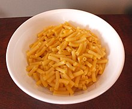

Mac and Cheese

Mac and Cheese - A super easy recipe for the kids.
Ingredients
- 1 box Kraft mac and cheese
- 1 cup milk
- (optional) hot dogs
Instructions
- Bring medium saucepan of water to boil
- Ensure you have removed cheese packet from the box, then add the noodles to the boiling water. Stir occassionally.
- Once noodles are desired firmness, remove from heat and drain with colander.
- Put drained noodles back into the saucepan.
- Add 1 cup milk and cheese seasoning to the saucepan and stir over low-medium heat.
- If desired, also add chopped and cooked hotdog pieces.
- Enjoy!